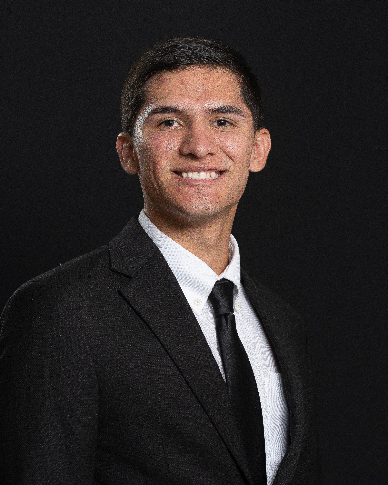

Computer Scientist
with Cybersecurity Concentration
Who Am I?
I have the experience and technical foundation of a computer scientist, which
means I'm not just comfortable with coding, but I also enjoy digging into
complex systems and understanding how they work. Computer Science is great, but my true passion is cybersecurity. I’ve explored many different areas within the field, but lately, I’ve been diving deeper into offensive security. I love learning and constantly expanding my skills to stay on top of the latest in cybersecurity.

Education
Baylor University
Bachelor of Science in Computer Science Concentration in Cybersecurity
Graduation: May 2025
Courses Taken:
Computer Science Classes:
Computer Systems (x86 course), Data Structures, Software Eng II, Intro
Algorithms, Database Design, Data Communications (Networking), Intro Cyber, Operating Systems,
Foundations of Computing.
As a Research Assistant at Baylor University, I have contributed to a
variety of cybersecurity projects, including research initiatives aimed
at developing educational labs to teach cybersecurity principles. I have
supported the organization and execution of cybersecurity
competition: The Cybersecurity Interdisciplinary Incident
Response Competition (CIIRC), and performed penetration testing on
competition networks after establishing Rules of Engagement (ROE).
Additionally, I created post-mortem reports to analyze findings and improve
future competition frameworks. Currently, I am collaborating with Dr. Rivas
on research involving AI/ML applications in offensive cybersecurity
strategies and am excited to expand my experience in this emerging area.
Digital Information Technology Intern
General Motors - May 2024-August 2024
During my internship at General Motors, I developed three distinct
applications that were crucial to the operations of the Operating Systems
Engineers (OSE) team. These applications were designed to be compatible with
multiple operating systems, including Linux, Windows, macOS, Android, and
iOS. In building these solutions, I applied various software engineering
principles such as General Responsibility Assignment Software Patterns
(GRASP) and Keep It Simple, Stupid (KISS). This experience provided me with
valuable hands-on learning and reinforced my understanding of effective
software design practices. It was a highly rewarding opportunity that
deepened my technical skills and industry knowledge.
SOC Intern
Baylor Univeristy - August 2023-May 2024
During my time at the Security Operations Center (SOC) for Baylor
University, I gained hands-on experience with various cybersecurity tools
and technologies. I developed proficiency in using Splunk for security
information and event management (SIEM) and worked extensively with
intrusion detection systems (IDS), including Host-based Intrusion Detection
Systems (HIDS) and Network-based Intrusion Detection Systems (NIDS). This
role enhanced my skills in real-time threat monitoring, log analysis, and
incident response, providing a strong foundation in cybersecurity operations
and defense strategies.
Information Technology Intern
General Motors - May 2023-August 2023
As an Information Technology Intern at General Motors, I worked with the
Cyber Detect team, gaining hands-on industry experience in analyzing
security logs and evaluating the severity of alerts. I utilized
Microsoft Sentinel and 365 Defender to monitor and secure cloud
environments. Additionally, I developed experience in using Jupyter
Notebooks to automate security log analysis and aggregate detected data,
in an effort to streamline the process of identifying potential threats
for the team. Did not get to complete Jupyter Notebook assignment before
internship deadline.
Student Network Technician
Baylor University - August 2022 to May 2023
As a Student Network Technician at Baylor University, I gained valuable
hands-on experience in network infrastructure management and support. My
responsibilities included building and testing Ethernet cables using RJ45
connectors, repairing network jacks, and frequently activating data ports to
ensure reliable connectivity across campus. I regularly performed
maintenance and troubleshooting for Intermediate Distribution Frames (IDFs)
and Main Distribution Frames (MDFs), ensuring optimal network performance
and minimizing downtime. This role enhanced my understanding of physical
network setups and provided me with practical skills in managing and
maintaining network hardware.
Cybersecurity Student Worker
Baylor University - January 2022 to August 2022
Working as a Cybersecurity Student Worker has been one of my most rewarding
experiences, as it gave me an opportunity to showcase my dedication and
passion despite having limited technical skills when I started. I was
initially offered this role not because of my expertise, but due to my
commitment to learning and deep interest in cybersecurity. When I first
joined, I had no prior knowledge of cybersecurity or computer science—even
basic concepts like Linux were completely new to me. However, after spending
countless hours completing labs for Dr. Donahoo on my own time, I was given
the chance to turn my learning into a professional role.
In this position, I was responsible for creating and maintaining virtual
environments for Baylor's Collegiate Cyber Defense Competition (CCDC) team.
I managed and maintained a Proxmox cluster hosted on a server in a graduate
laboratory, where I had hands-on access to configure and optimize resources.
Each week, I designed complex, interdependent service environments to
simulate real-world networks, such as setting up an Apache web server that
relied on a MariaDB backend, or deploying Active Directory domains
integrated with both Windows and Linux clients using RealmD. My role also
included creating comprehensive documentation for Proxmox deployments to
support the team’s understanding and use of the platform.
This experience not only enhanced my technical skills but also strengthened
my ability to tackle complex problems, design secure networks, and document
technical processes effectively. It stands out as my favorite experience
because my perseverance and strong learning mindset were rewarded,
especially since that was not my initial intention.
The Collegiate Cyber Defense Competition (CCDC) is a high-intensity incident
response competition designed to provide students with a realistic
experience in managing and defending a simulated corporate network
infrastructure. Participants are tasked with identifying, responding to, and
mitigating a variety of cybersecurity incidents while maintaining critical
business operations. Teams must secure services, handle complex scenarios,
and demonstrate effective teamwork and technical skills under pressure.
During my first year competing in CCDC, I was responsible for creating the
network diagram and mapping out our environment. To achieve this, I developed
custom nmap scripts to scan and map out the entire subnet. Once I identified the
machines on our network, I conducted comprehensive port scans on all devices to
determine which ports were open and potentially vulnerable. Following this, I
created a preliminary attack surface report to outline potential threats and
focus our defense strategy.
In my second year, I continued with similar responsibilities, but also took on
the specialized role of our team’s LDAP expert. I managed all user
modifications, onboarding, and offboarding processes, as well as implementing
mass password resets and enforcing password policy changes on an OpenLDAP
server. This expanded role allowed me to deepen my understanding of directory
services and user management, while continuing to refine my skills in network
mapping and incident response.
This year (Senior Year) I will be taking on the role of the Active Directory
Expert. I will be our expert on any onboarding, offboarding, and gpos that
could come our way.
National Cyber League (NCL)
395th place out of 8000
participants - BiAnnual Competitor for 4 years.
The National Cyber League (NCL) is a cybersecurity competition that helps
students and professionals build and showcase their skills through hands-on
challenges. Participants engage in scenarios such as cryptography, network
traffic analysis, log analysis, web application security, and more. The
competition allows participants to demonstrate their skills in both
individual and collaborative formats. NCL is widely recognized in the
industry and aligns with the NIST Cybersecurity Framework.
TryHackMe is an interactive cybersecurity training platform where I spent a
lot of time learning the basics and building a solid foundation in topics
like networking, Linux, and web security. After covering the fundamentals, I
moved on to the Red Teaming module, where I learned more about offensive
security techniques like privilege escalation, moving between systems, and
finding vulnerabilities. This gave me hands-on experience in how real-world
attacks work and how to think like an attacker.
Hivestorm is a cybersecurity competition where teams work to secure and
defend a network within a set time frame. I participated in this competition
to get more experience with real-world defensive strategies. During
Hivestorm, we focused on identifying and fixing security misconfigurations,
hardening systems, and keeping critical services up and running. It was a
great way to practice defending understanding what it takes to keep a
network secure.